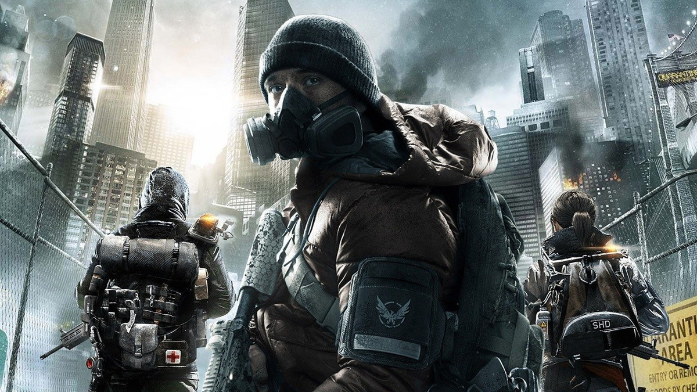
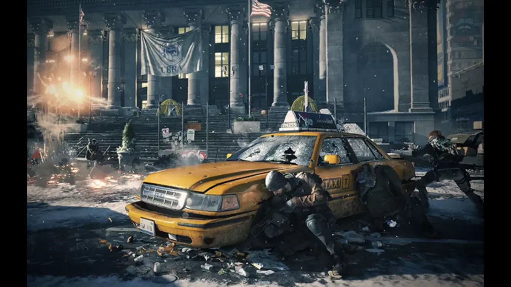
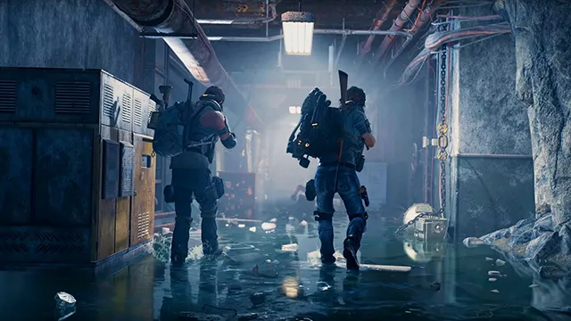
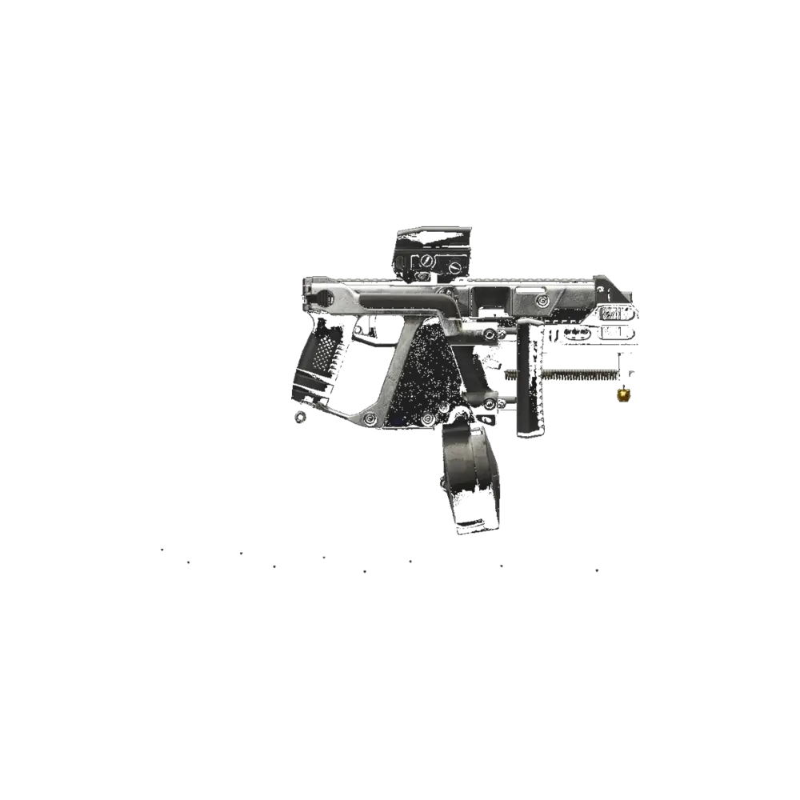
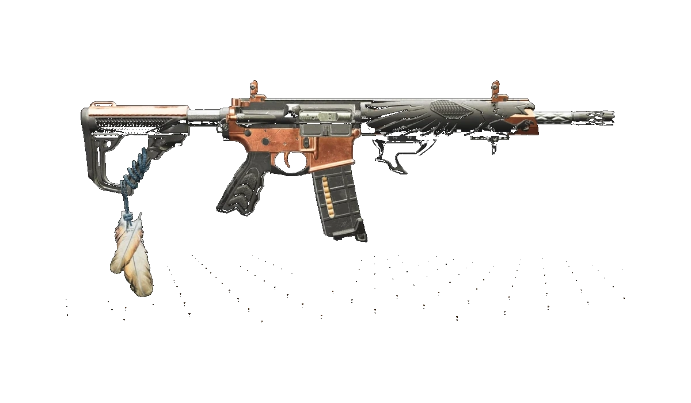
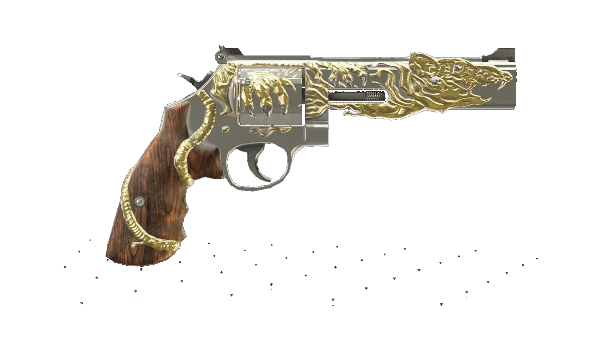
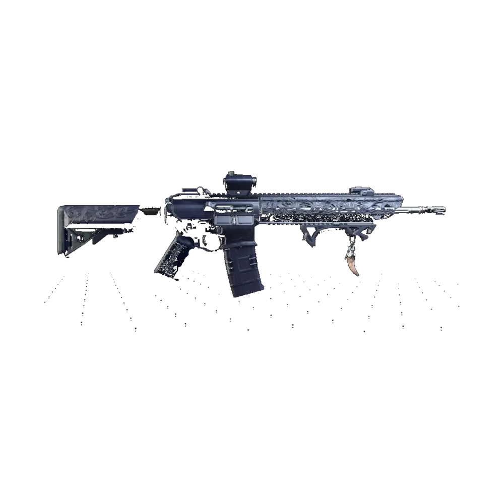

Quero dano máximo
Use Striker DPS para dano sustentado, farm rápido, raids e missões heroicas.
Ver Striker DPSExplore builds DPS, Skill, PvP e híbridas, guias de armas exóticas, raids, Paradise Lost, missões lendárias, intensificação e estratégias para farm, progressão e endgame em The Division 2.
Builds META, farm, armas exóticas, raids, Paradise Lost, lendárias e intensificação para evoluir no endgame.
Chegou ao endgame agora? Comece por uma build funcional, aprenda a farmar, escolha um estilo de jogo e depois evolua seus itens com proficiência e intensificação.

ENDGAMESaia dos itens aleatórios e escolha uma base simples: Striker DPS para dano, Skill Countdown para segurança ou Híbrida para jogar solo.
Ver builds iniciais
FARMUse Countdown, missões, mundo aberto e loot direcionado para buscar peças, armas, mods e materiais com mais eficiência.
Começar pelo farm GUIA
GUIA
DPS para matar rápido, Skill para farm seguro, Híbrida para solo, Suporte para grupo e PvP para Dark Zone ou Conflito.
Escolher build PROGRESSÃO
PROGRESSÃO
Entenda como evoluir armas, equipamentos e habilidades depois de montar a build, priorizando itens que você usa com frequência.
Ver progressãoUse este atalho para ir direto ao tipo de build que combina com seu objetivo atual no jogo.
Use Striker DPS para dano sustentado, farm rápido, raids e missões heroicas.
Ver Striker DPSUse Skill Countdown com torreta, drone e variações de controle para farmar com menos risco.
Ver SkillUse builds híbridas que equilibram dano, resistência, utilidade e margem de erro.
Ver HíbridasUse builds médicas para ajudar o time em incursões, raids e lendárias.
Ver SuporteComece pelas builds mais úteis para progressão, farm, raids e conteúdo endgame.

Build META focada em dano sustentado, crítico e alta cadência, ideal para raids, farm e missões heroicas.
Build focada em habilidades ofensivas, controle de área e farm seguro para atividades em grupo.
Ver buildAlta mobilidade, burst damage e pressão agressiva para Dark Zone e Conflito.
Ver buildBuild voltada para suporte, coordenação de grupo e sobrevivência em conteúdo endgame.
Ver buildCombinação equilibrada entre dano, resistência e utilidade para diferentes situações.
ExplorarExplore categorias especializadas para encontrar builds focadas em DPS, habilidades, PvP, raids e conteúdo avançado.
Builds focadas em dano crítico, alto DPS e eliminação rápida para PvE, raids e farm endgame.
Ver buildsBuilds focadas em torretas, drones, status effect e controle de área para jogo solo ou em grupo.
Ver builds
PvP
Builds preparadas para Dark Zone, Conflito e combate agressivo contra outros agentes.
Ver builds
HÍBRIDA
Combinações entre dano, proteção e habilidades para builds mais versáteis e equilibradas.
Ver buildsO conteúdo mais difícil de The Division 2 exige builds otimizadas, coordenação e estratégias específicas.
Guias completos com bosses, mecânicas, loot exclusivo e builds recomendadas para cada raid.
Explorar raidsEstratégias para missões lendárias com foco em controle, posicionamento e sobrevivência do grupo.
Ver lendáriasIncursão ligada ao farm da Ouroboros, exigindo coordenação, execução rápida e builds otimizadas.
Ver incursãoGuias rápidos para farm, raids, builds e progressão endgame, ajudando você a evoluir seu agente.
Entenda onde buscar a SMG, quais atividades priorizar e quais builds combinam melhor.
Resumo dos encontros, bosses, mecânicas principais e preparação recomendada.
Um caminho simples para sair do improviso e montar uma build eficiente.
Descubra talentos exóticos, formas de obtenção e as melhores builds para cada arma do endgame.

SMG dominante no endgame, focada em burst damage, mobilidade e combate agressivo a curta distância.
Ver guia
Rifle exótico obtido na Raid Dark Hours, focado em sobrevivência e dano sustentado.
Ver guia
Pistola exótica focada em headshot e dano explosivo, ligada à Raid Operação Cavalo de Ferro.
Ver guia
Rifle versátil para builds DPS focadas em crítico, precisão e dano sustentado no endgame.
Ver guiaMonte builds mais fortes, farme equipamentos, desbloqueie exóticas e prepare seu agente para raids, Paradise Lost, lendárias e intensificação.